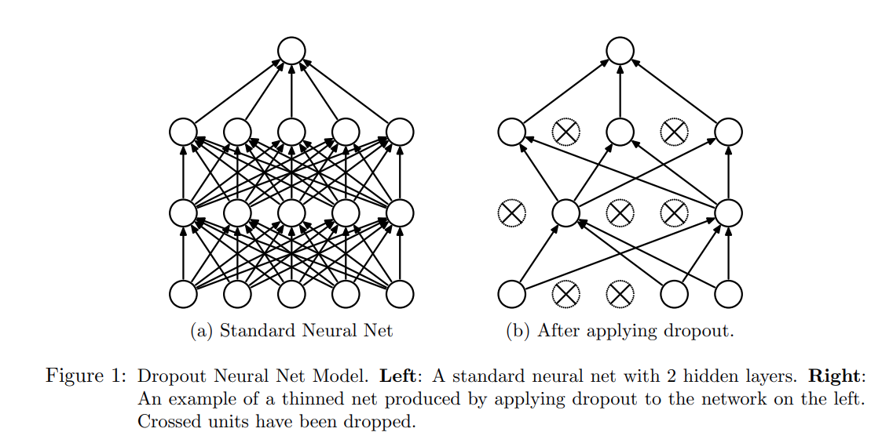

It's been almost six years since I last read Yuval Noah Harari's "Homo Deus: A Brief History of Tomorrow". I remember when a colleague, who had just finished reading Sapiens, asked me if I recommended this sequel. My response was that this book did not leave as lasting an impression as its predecessor. Indeed, over the past six years, I've nearly forgotten most contents of this book, until a friend sent me this article, driving me to re-examine Yuval Harari's Dataism.
This reevaluation comes at a very good time—the AI trend led by ChatGPT is sweeping the world, with the core of large language models being vast amounts of text data. Everything seems to be developing towards the Dataism Harari described. In this article, I will share my perspective as a data scientist on why Harari's Dataism is problematic and how we can address these issues.
What is Dataism?
I recommend reading the last chapter of "Homo Deus: A Brief History of Tomorrow". According to Harari, Dataism spans multiple disciplines, including:
- [Sociology] Human society is similar to a huge data center or computer, with each individual acting as a neuron or data processing unit.
- [History] The historical development of mankind is the improvement of this massive data processing system, capable of generating and managing increasing volumes of information. The books, music, paintings, and math equations created by humans are all equivalent to the input and output of data flow. Societies with better data processing capabilities (capitalism) have eliminated societies with weaker data processing capabilities (communism).
- [Biology and Neuroscience] The cognitive thinking ability and emotions of human individuals are essentially a kind of algorithm.
- [Computer Science] The rapid development of the Internet has brought us a large amount of information far beyond our brain's processing capacity. On the other hand, artificial intelligence is surpassing humans in more and more fields: recommendation algorithms may know us better than ourselves.
The primary criticisms of Dataism focus on Harari's challenge to humanism and traditional religions—after all, many people are uncomfortable with the notion that our humanity, rationality, and emotions are merely algorithms and data flows. But for me, such disputes are hard to resolve. Because according to Harari, Dataism, like various religions and ideologies, is a kind of "imaginary reality" or a fiction, rather than a falsifiable scientific proposition. In such a situation, the discussion can easily turn into debates about more fundamental philosophical thinking, such as what the nature of human consciousness is, and no conclusion can be drawn. It can only result in everyone holding onto their own opinions, each with its own rationale.
What concerns me more are the specific suggestions Harari makes in his book, that is, how a Dataist (believer in Dataism) will put his faith into specific actions. He writes:
Like every religion, it has its practical commandments. First and foremost a Dataist ought to maximise data flow by connecting to more and more media, and producing and consuming more and more information. Like other successful religions, Dataism is also missionary. Its second commandment is to link everything to the system, including heretics who don’t want to be plugged in. And ‘everything’ means more than just humans. It means every thing.
More Connections, Better?
Harari claims Dataism is based on biology and computer science, but the above paragraph shows that Dataism is neither consistent with biology nor computer science.
Beginning with biology, humans go through a stage called synaptic pruning from birth to adulthood. During this stage,the connections between neurons in the brain are reduced, not increased. Synaptic pruning is widely thought to be related to learning,where the brain acquires new knowledge and skills by eliminating unnecessary connections rather than adding more. This concept is intuitive; for example, you wouldn't want to activate the neurons used to play basketball while reading books. On the other hand, some studies suggests that problems with the process of synaptic pruning may be associated with conditions such as schizophrenia.
We should be grateful that Mother Nature is not a fanatical Dataist, otherwise your brain might look like this:
Deep neural networks based on computers also follow the same rules. Ilya Sutskever, one of OpenAI's founders who was recently gained significant media attention, is one of the most cited experts in the field of artificial intelligence and machine learning. His third most cited paper (cited 48,429 times as of February 2024) is called "Dropout: a simple way to prevent neural networks from overfitting". You don't need to be an expert in artificial intelligence to grasp the essence of this paper. Just looking at the diagram in the paper can make it clear—yes, the neural network model on the right outperforms the one on the left.

More Connections, More Information?
Not only biology and computer science, but Dataists who are keen to increase "links" may also lack a fundamental understanding of statistics. Some might argue, doesn't the Law of Large Numbers, the foundation of statistics, suggest that more data is better? As we accumulate more data, the answers we get become more accurate, eventually infinitely converging to the truth.
But the Law of Large Numbers has a key prerequisite: the data must be independently and identically distributed. When all humans are interconnected via electronic devices and networks, their independence vanishes. There are already many polarized views on the Internet today, people either passionately support or oppose certain views. Statistically speaking, ten thousand random variables with a correlation of 1 or -1 carry no more information than a single random variable. Of course, some people will say that in some conditions, such as ergodic and bounded correlation, the Law of Large Numbers will still converge, but the convergence speed is obviously much slower than that of independently and identically distributed variables.
Harari is not unaware of this. When discussing the historical view of Dataism, he writes:
The greater the number and variety of processors, the harder it is to freely connect them.
Perhaps he optimistically believes in the possibility of maximizing connections without sacrificing diversity.
However, increasing connections not only reduces information and increases data noise, but also significantly increases tail risks brought by contagion. Modern transportation allowed COVID to spread globally in a very short time. Similarly, a piece of misinformation can spread quickly on social networks like a virus. Time was originally the best antidote to misinformation, ss Lincoln famously said:
You can fool all the people some of the time, and some of the people all the time, but you cannot fool all the people all the time.
But by the time people realize they've been fooled, the falsehoods that have rapidly spreaded worldwide through the internet may have already caused great damage.
One bit data is not one bit data
I recently finished reading Dr. Robert Lustig's book "Metabolical", where his assertion of "a calorie is not a calorie" was impressive. As a data scientist, I immediately think of the same analogy for data: one bit data is not one bit data.
For simplicity, I divide data into two types: data processed by the human brain and data processed by computers (of course, with the development of artificial intelligence, the former is gradually becoming a subset of the latter). I use food—that is, "data" processed by the human digestive system—as an analogy:
| Food (processed by human digestive system) | Data (processed by human brain) | Data (processed by computer) |
|---|---|---|
| Toxic food/junk food: transfat, over-processed food | Harmful information/false information: extreme thoughts, cults and conspiracy theories | Wrong data/biased data: inputting these data will only lead to absurd results, so-called GIGO (garbage in, garbage out) in machine learning field |
| Useless food: food additives, fructose, alcohol. Human can survive without these substances, and long-term consumption may have potential risks. | Useless information: various news media, especially financial news | Noise in data: daily stock market fluctuations, which contain a lot of randomness and irrational factors. |
| Nutrition: essential substances like vitamins, proteins, fats, etc. | Knowledge: science, philosophy, and various experiences learned in life | Models: Whether it's statistics or machine learning, model is a kind of compression of (cleaned) data, extracting signals from noise |
| Excessive intake of nutrients: Even water can harm or kill if taken in excess. | Excessive knowledge: over-specialization in academics, what Taleb calls IYI (intellectual yet idiot) | Overfitting of models: the model performs exceptionally well on the training data, but is outrageously wrong in real-world applications. |
Thus, the reality may be far more complex than Dataists assume: not all data is equal, and one bit of data is not just one bit of data. The worship of data itself is more like the past obsession with vitamin C—believing that consuming large amounts of vitamin C can cure various diseases, and drinks labeled "rich in vitamin C" are considered healthy.
Information and Freedom
Harari believes "Information wants to be free", suggesting that dataists should liberate "information" and let them flow freely. While this view appears valid, it raises two questions: 1. Is information truly imprisoned? 2. Can humans really decide whether information is free or not?
Nassim Taleb has a different perspective:
Information is antifragile; it feeds more on attempts to harm it than it does on efforts to promote it.
He believes that attempts to suppress information only make it spread wider: for example, a banned book may arose people's curiosity, and an attack on a viewpoint may inadvertently promote it, a phenomenon frequently observed on today's internet.
In fact, many people, including governments and the media, have recognized that simply banning or refuting information often backfires, and that a better strategy is to use information to defeat information: deliberately creating topics to distract people, using a large amount of other information to flood people's brains, impairing their critical thinking abilities. Harari himself also writes in the book:
In the past, censorship worked by blocking the flow of information. In the twenty-first century censorship works by flooding people with irrelevant information. We just don't know what to pay attention to, and often spend our time investigating and debating side issues. In ancient times having power meant having access to data. Today having power means knowing what to ignore.
So the challenge in modern society is not the lack of freedom of information, but too much free information.
In response, Dataism's solution seems to be simple and crude—leaving everything to models and algorithms, as they can handle large amounts of data more effectively than humans. This also addresses our second question: it is not humans who should decide the freedom of information, but sophiscated models and algorithms.
Yet, data scientists, statisticians, computer scientists and mathematicians all acknowledge a fundamental truth: "All models are wrong, but some are useful". Given that "all models are wrong", it is absurd and ridiculous to idolize them like Dataism. Historical data cannot reflect the future, and all models, essentially summaries of past data, are constrained by the turkey problem. That's why Wall Street's quantitative hedge funds never bet everything on single mathematical model——the last fund to attempt this was called LSTM.
Lindy Effect
So, how should we view the ever-growing information on the internet and the rapidly developing artificial intelligence models recently? Harari suggests in his book that, like the free market economy, data also has an "invisible hand." Regrettably, he does not elaborate further on this. I believe that, just as the "invisible hand" in economics is bottom-up, the "invisible hand" of data should also be so, rather than following a top-down grand model or algorithm controlled by government bureaucrats or a few large tech corporations.
The Lindy Effect embodies this "invisible hand." All information and data flows follow the Lindy Effect: information that has withstood the test of time has a longer "expected lifespan." Books, music, and paintings that have been popular for centuries are likely to remain so in the next hundred years. When we expand this time frame, DNA——a code designed for life——also follows this invisible hand of Lindy. Contrary to common misconceptions, the Lindy Effect does not imply immortality but serves as a harsh selection mechanism. Mathematically, the Lindy Effect indicates that the lifespan of information follows a Pareto distribution——most information will be discarded, just like countless bankrupt companies in the capital market and numerous extinct species in biological evolution, with only a few being favored by time. Therefore, what we should preserve is this "invisible hand," not the data and algorithms themselves. Just as we should protect the ecosystem rather than a specific species. Misidentifying the object of protection can lead to catastrophe, allowing companies that should have failed to survive under the guise of being "too big to fail" only amplifies future systemic risks.
In conclusion
Yuval Harari's upcoming book, NEXUS: A Brief History of Information Networks from the Stone Age to AI, seems to be an extension of the last chapter on Dataism in Homo Deus: A Brief History of Tomorrow. I do not know if he will revise his previous arguments or continue to advance in the direction he has set. I have pre-ordered this book and will share my thoughts after reading it.